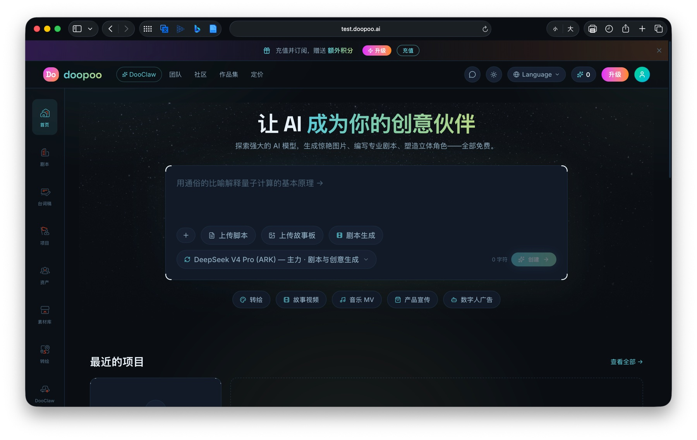
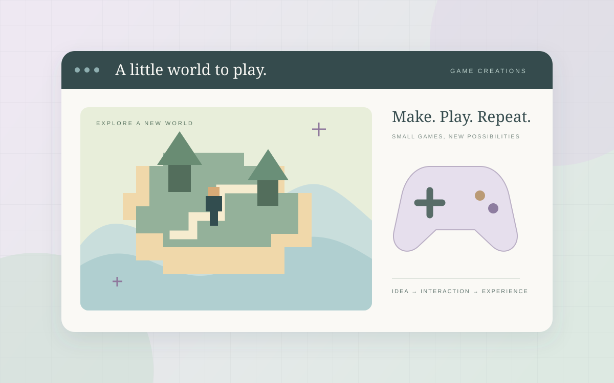

AI Agent / 2026
RouteAI
把旅行规划，做成可继续的过程。
一个可恢复的多 Agent 旅行规划系统。让检索有来源、行程可检查；在需要补充信息或审核时暂停，再从原来的位置继续。
LangGraphTool CallingHuman-in-the-loopFastAPI
阅读项目案例
56自动化测试通过
17 / 17离线评测场景
109场景检查通过
Selected work · 作品集
关注 AI 如何走出一次回答，进入真实的产品流程。这里记录我的设计选择、工程实践，以及能够复现的结果。
03 / 精选作品
Agent 工程 · AI 产品 · 互动游戏
AI Agent / 2026
把旅行规划，做成可继续的过程。
一个可恢复的多 Agent 旅行规划系统。让检索有来源、行程可检查；在需要补充信息或审核时暂停，再从原来的位置继续。

AI product / 团队开发
让生成能力，进入完整的创作流程。
参与 AI 内容生产平台的全栈开发，串联画布、剧本、角色、资产、分镜与时间轴；将多模型路由、重试与故障切换融入实际业务。

Game creations / 个人创作
把创意，做成可以亲手玩的体验。
围绕不同题材与玩法，展开网页游戏创作与交互探索。把规则、视觉与声音放进同一个体验，在星匣持续呈现自己的游戏作品。
Behind the work
从多 Agent 规划，到 AI 内容生产，再到互动游戏创作。作品形式不同，关注点一致：把具体想法转化为可以体验的产品，并在实践中不断完善。